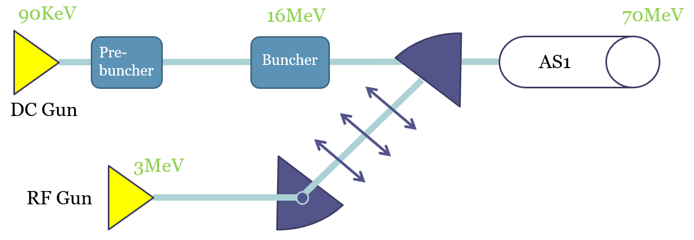

ALBA Synchrotron

From October 2021 to April 2022, I had the privilege to work in an internship at ALBA Synchrotron. My job there was to designing a simulation to study the possibility of adding a thermionic RF-Gun to the LINAC.

The more modern and powerful RF-gun, was not to replace the current DC-gun they had at the moment so they needed a transfer line that would connect the new gun to the LINAC. I used two main software to simulate the transfer line. The general particle tracer or GPT, was a particle simulation that computed the dynamics of charged particles (in this case electrons) through magnetic and electric fields. It's output are the positions and velocities of the particles it simulated. CERN's MADX does beam optics simulation. It does not deal with solving the dynamics of particles and instead, simulates the different elements in the line as lenses which change statistical information of the beam as a whole.The main challenge of this project was to make an identical simulation in both of this fundamentally different simulations, and making similar predictions out of both.
In the project I also used python to automate the simulations and to generate the starting conditions of the beam just as it leaved the RF-gun.